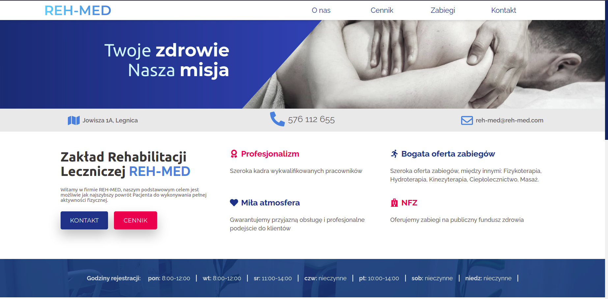

Projekt strony internetowej dla placówki rehabilitacyjnej Reh-med. Użyte technologie: Gatsby (do napisania proejktu w jsx), Scss (do wystylizowania komponentów na stronie), Strapi (jako cms), AWS Amplify (jako usługa hostująca strony statyczne), Heroku (jako usługa hostująca Strapi). Strona została napisana przez trzy osobowy zespół Harp0n'a od zadań webowych.

const createPhotos = (photos, setExpanded) => {
const result = []
for (const key in photos)
result.push(
div
data-aos="fade-up"
key={key}
onClick={}
() =>
setExpanded({
isExpanded: true,
fluid: photos[key].node.childImageSharp.fluid,
})
}
>
Img
className={classes.photo}
fluid={photos[key].node.childImageSharp.fluid}
/>
/div>
)
return result
}